Give a high-level overview of what you implemented in this homework. Think about what you've built as a whole. Share your thoughts on what interesting things you've learned from completing the homework.
Part 1: Masses and springs
Here are two images of scene/pinned2.json:
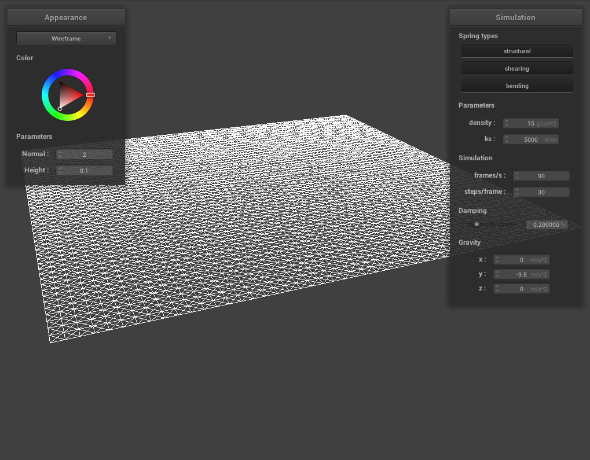
Side View
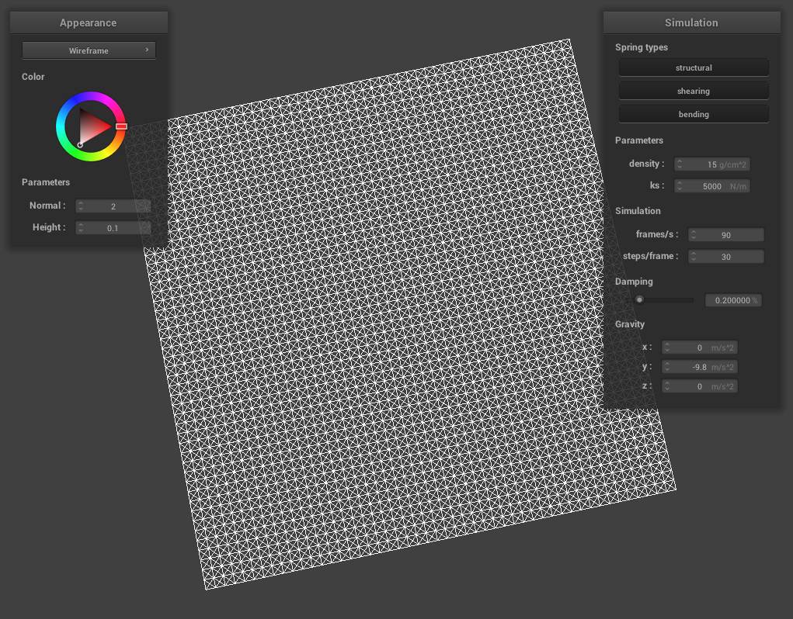
Top-Down View
Here are some wireframe images (of scene/pinned2.json) with various constraints applied in the GUI:
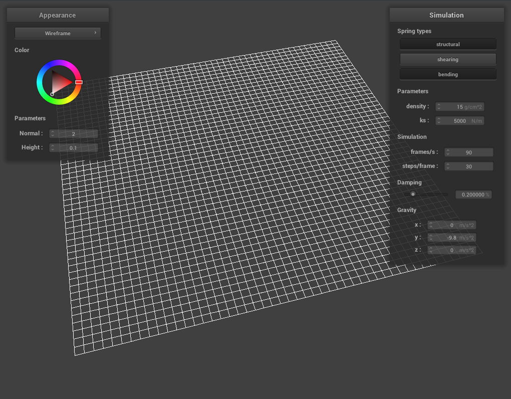
No Shearing Constraints
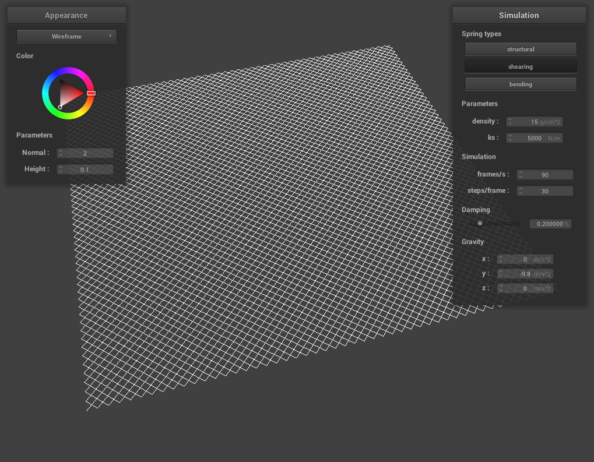
Only Shearing Constraints
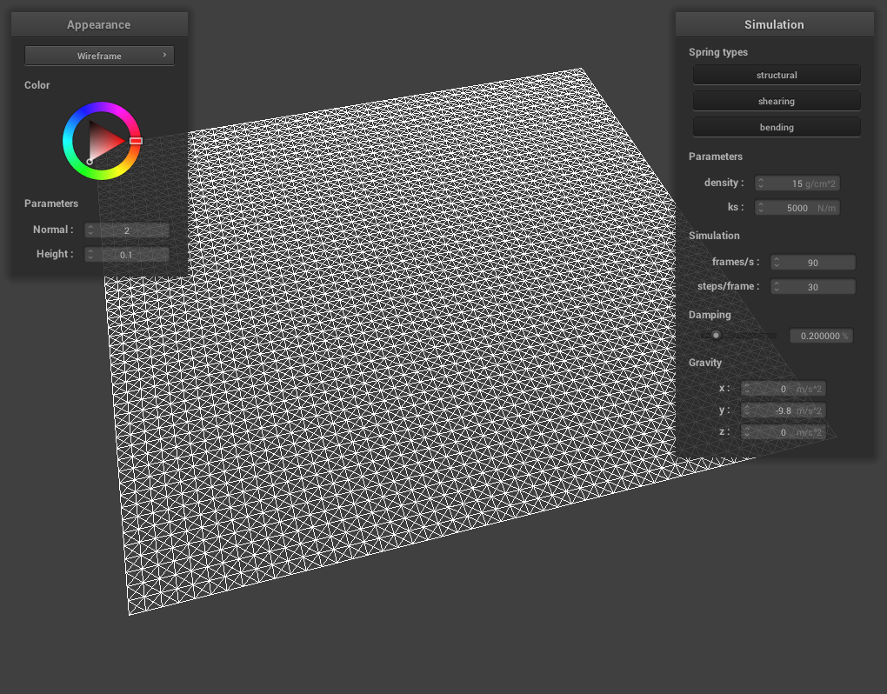
All Constraints
Part 2: Simulation via numerical integration
Below are some simulation images with a few different spring constants (on scene/pinned2.json, and all other parameters are the default ones). What we notice is that the higher the spring constant, the less that the cloth drapes in the final rest position (which makes sense, because a higher spring constant means that points are prevented from stretching far away from each other). On the contrary, the cloth ends up having many more and thinner folds in the rest position with a smaller spring constant, which makes sense because there is a weaker force keeping the point masses on the flaps together, thus reducing the size of each flap, and allowing the cloth to sag more in the rest position.
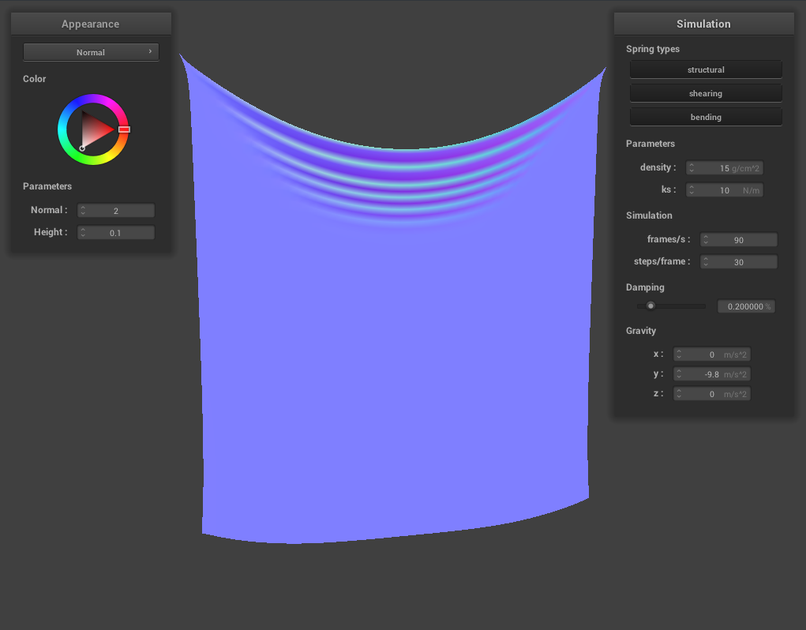
ks=10
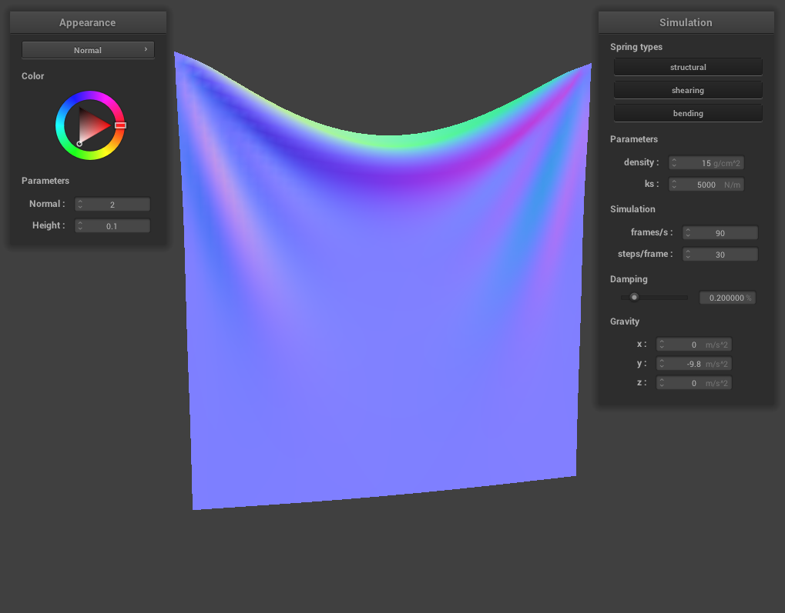
ks=5000 (Default)
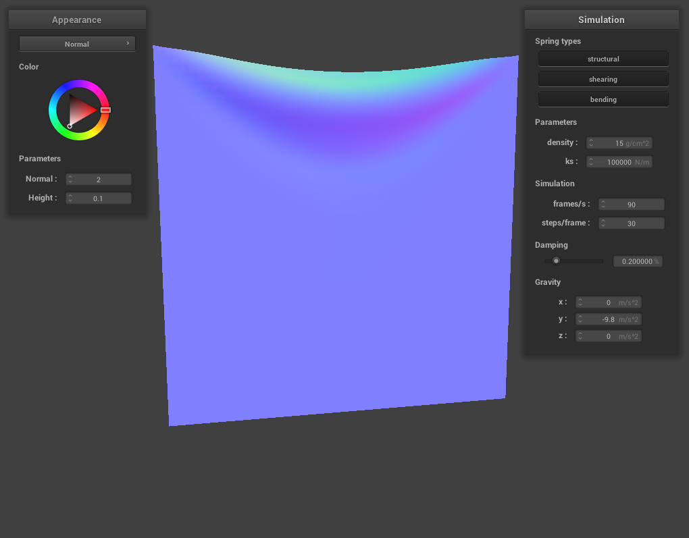
ks=100000
Below are some simulation images with a few different densities (on scene/pinned2.json, and all other parameters are the default ones). What we notice is that the lower the density of the mesh, the less that the cloth drapes (which makes sense because a lower density means that the force of gravity has a lower effect on each individual point mass, which prevents the cloth from having a considerable "U"-shape from opposing the spring force). Additionally, the flaps are more pronounced with a higher density, because the springs are more active in preventing the cloth from folding against the force of gravity.
density=1 g/cm^2
density=15 g/cm^2 (Default)
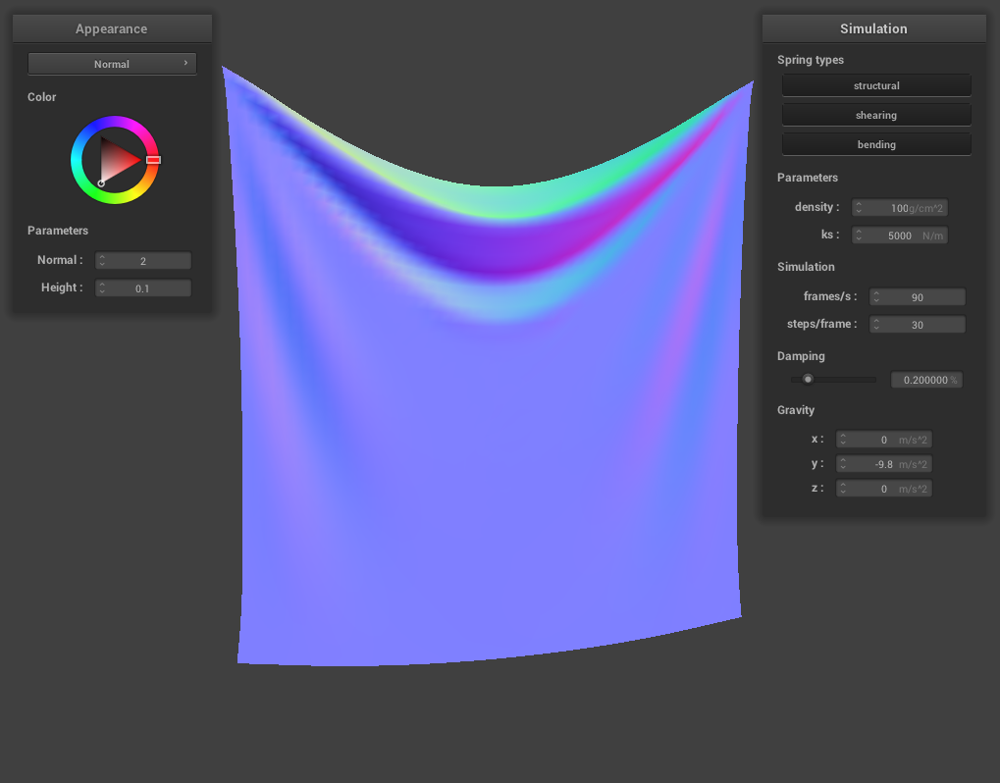
density=100 g/cm^2
Below are some simulation images with a few different damping percentages at approximately the same time of simulation (on scene/pinned2.json, and all other parameters are the default ones). It appears that the resting state doesn't change with different damping values, but the convergence to the steady-state configuration of the mesh is different based on the damping. If the damping value is high, then it takes a very long time for the cloth to drape (since we essentially only have the point mass forces multiplied by the change in time squared to affect the position of each point mass). If the damping value is very low, the cloth falls down extremely quickly and oscillates heavily around the resting state, because we have no damping to reduce the rate of change in the position of each point mass.
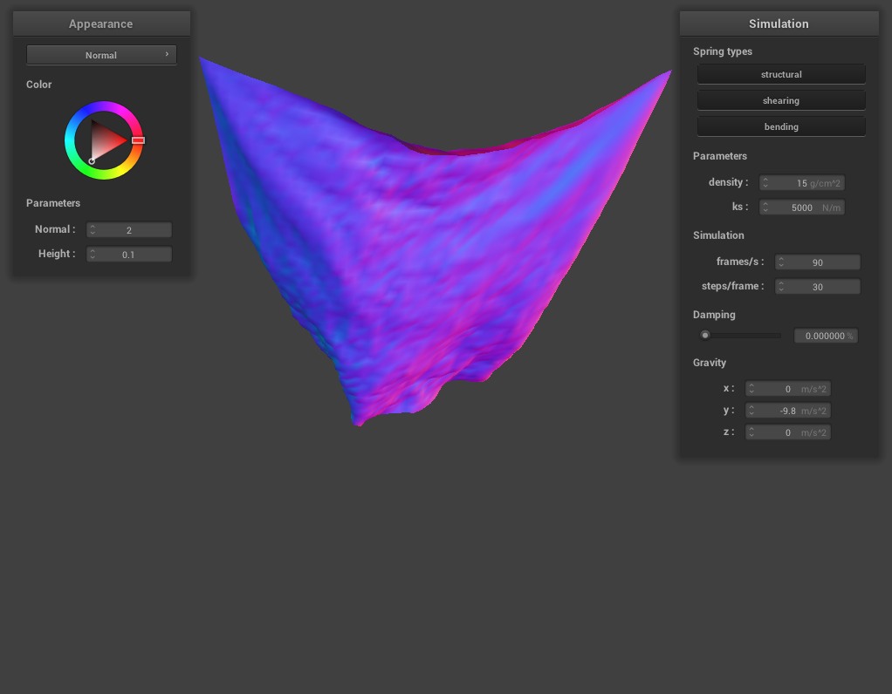
damping=0%
damping=20% (Default)
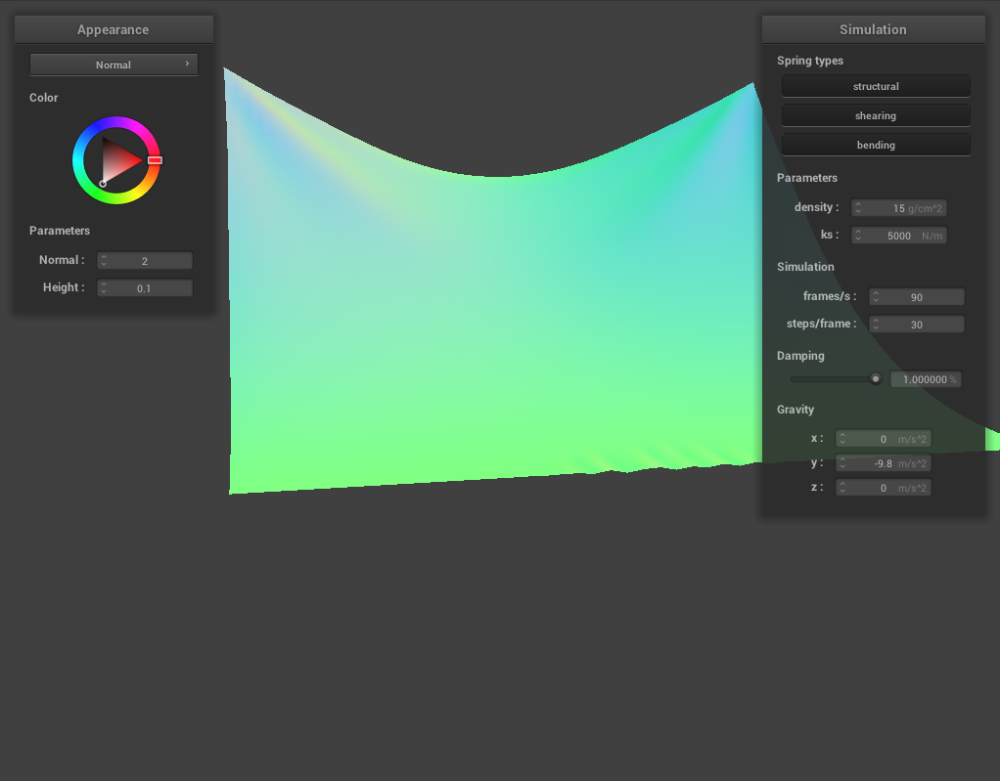
damping=100%
Here is a rendering of scene/pinned.json with default simulation parameters:
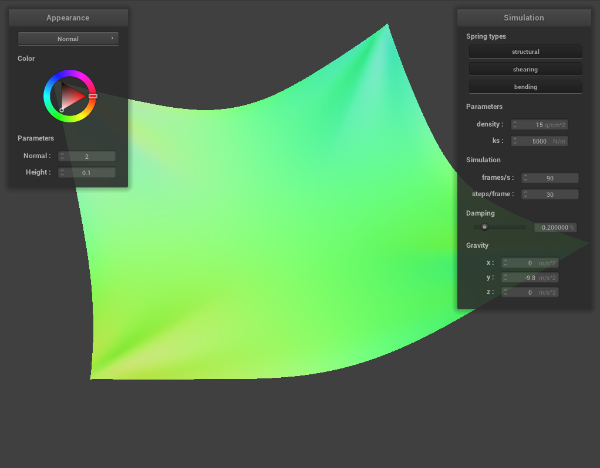
Part 3: Handling collisions with other objects
For spheres, I used the following collision process:
First, I check if \(\left\|\vec{p_m}-\vec{p_s}\right\|\leq r_s\) (where \(r_s\) is the radius of the sphere, \(\vec{p_m}\) is the position of the point mass, and \(\vec{p_s}\) is the position of the sphere's origin). If this is true, then we know there is a collision and the current position of the point mass is in the sphere. If not, then we just short-circuit the function and don't do anything else.
Assuming there is a collision, we calculate the tangent vector \(\vec{t}=\vec{p_s}+r_s\cdot\frac{\vec{p_m}-\vec{p_s}}{\left\|\vec{p_m}-\vec{p_s}\right\|_2}\) (where \(\vec{p_s}\) is the origin of the sphere). We want to ensure that our point mass position never crosses the sphere boundary, so we calculate an adjustment \(\vec{a}=\vec{t}-\vec{l_m}\) (where \(\vec{l_m}\) is the last position of the point mass). We do this to find out where our point mass's position should be at to be above the surface of the sphere, but not clip into the sphere.
We now set the position \(\vec{p_m}:=\vec{l_m}+(1-f)\vec{a}\) where \(f\) is the friction on the surface of the sphere. The reason for the friction is to allow the cloth to slide around the surface of the sphere if possible (so we don't pin the position of the point mass to the tangent position found on the sphere).
For planes, I used the following collision process:
First, I check if \(\text{dot}\left(\vec{p_m}-\vec{p},\vec{n}\right)\cdot\text{dot}\left(\vec{l_m}-\vec{p},\vec{n}\right)\lt 0\) (where \(\vec{p}\) is an arbitrary point on the plane and \(\vec{n}\) is the normal vector). If this is true, then it implies that our cloth crossed the plane during this timestep. Additionally, I checked if \(\text{dot}\left(\vec{p_m}-\vec{p}\right)\lt C\) (where \(C\) is the surface offset constant) to see if the point mass is close enough to the plane right now to try and push our point mass further from the plane. If either of these conditions hold, then I know that my plane collision happened and I proceed with the next steps. If both of these conditions don't pass, then I will declare that a collision/crossing did not happen (and short-circuit my function).
I calculate the tangent point (offsetted by \(C\)) as follows:
\[\vec{t}=\vec{p_m}-(a+c)\vec{n}\]
where \(a=\text{dot}\left(\vec{p_m}-\vec{p},\vec{n}\right)\) (i.e. the perturbation that \(p_m\) needs to go through to hit the exact tangent point), and \(c\) is \(+C\) if \(a_l>0\) (where \(a_l=\text{dot}\left(\vec{l_m}-\vec{p},\vec{n}\right)\)), and \(-C\) otherwise. \(c\) accounts for the fact that our final position should not touch the plane, but rather be at minimum distance \(C\) from the plane on the side that the collision is coming from.
We then simply define \(\vec{p_m}:=\vec{l_m}+\left(\vec{t}-\vec{p_m}\right)\left(1-f\right)\) to apply our plane boundary to the point mass (along with accounting-for friction).
Below are the resting positions of the cloth over scene/sphere.json with various spring constant parameters. What we notice is that a smaller spring constant results in more ripples in the cloth and more fine draping over the sphere (i.e. we can see the sphere shape more clearly around the top of the cloth). This is expected, because a lower spring constant allows for the cloth to drape over the sphere with very little resistance from the springs that would otherwise keep the cloth "flatter". For a large spring constant, we get that there are fewer ripples in the cloth, and our cloth does not mold to the sphere as much when placed over the sphere. This is also expected becuase a high spring constant forces the cloth to be more flat and create fewer small folds, regardless of the force from the sphere trying to have the cloth fully drape around the sphere.
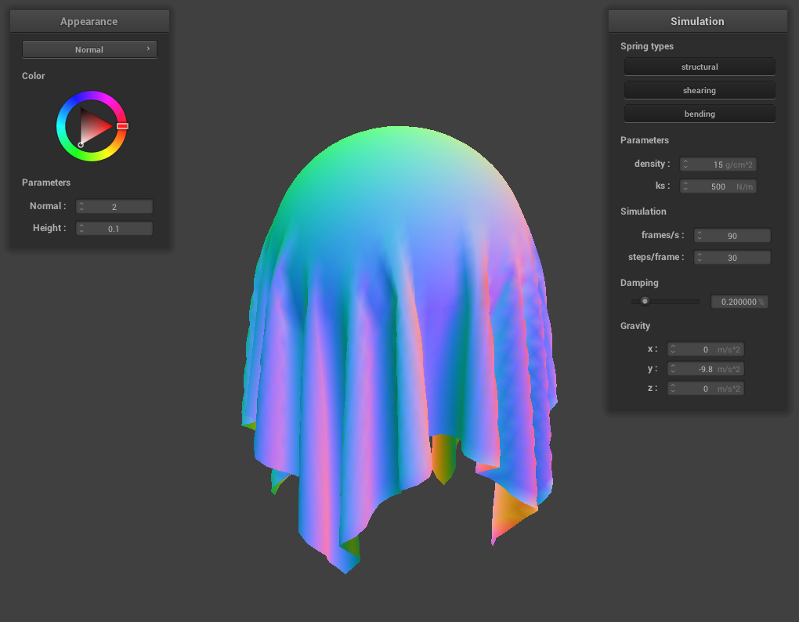
ks=500
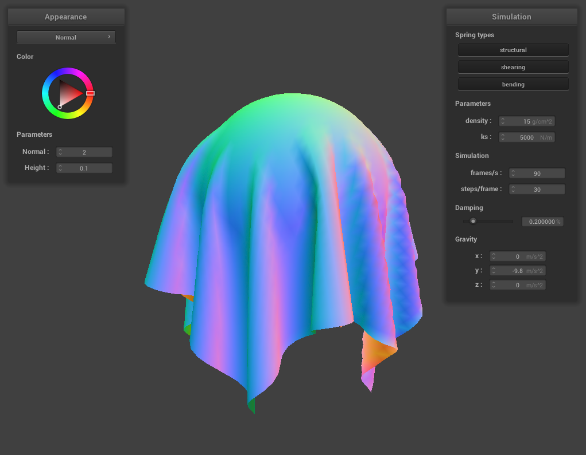
ks=5000 (Default)
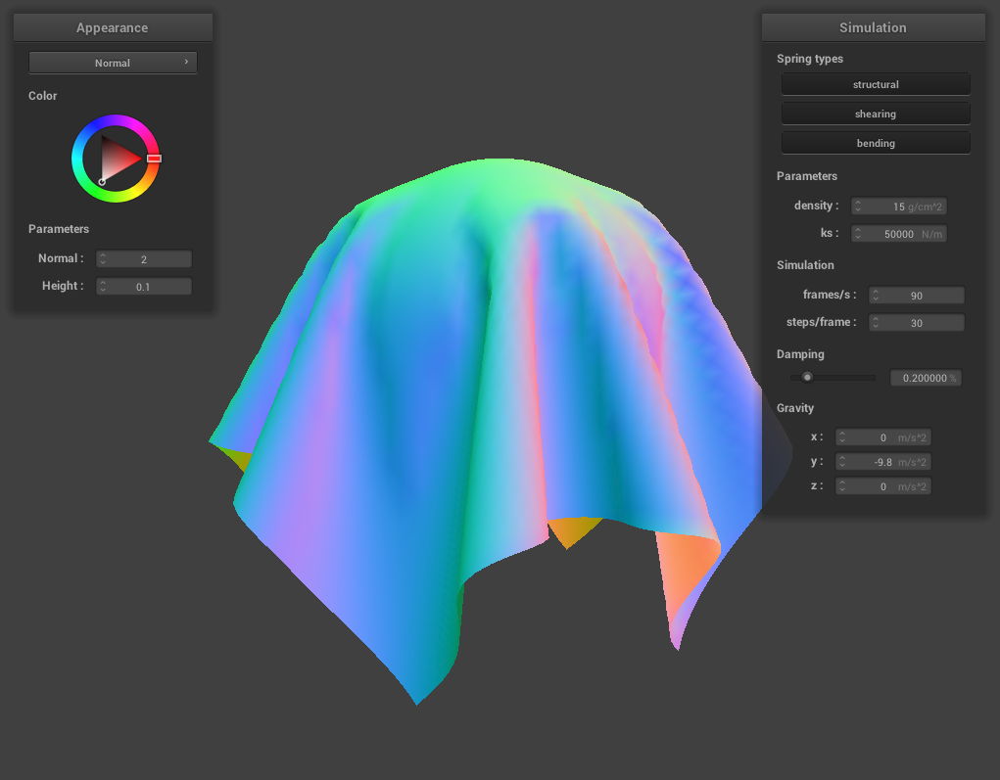
ks=50000
Below is the cloth resting on scene/plane.json with default simulation parameters.
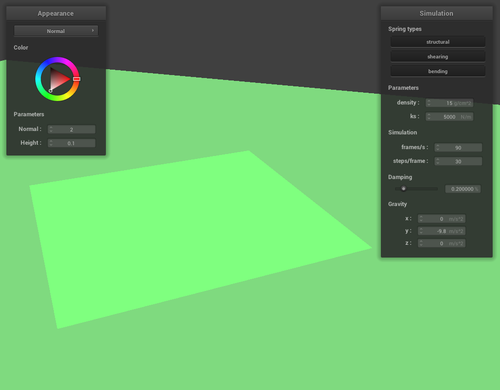
Part 4: Handling self-collisions
To handle self-collisions, we decide to test each point mass against points only in its close vicinity in order to reduce computation time. This is done by hashing each point mass to a position in a hash table, and we test each point mass to find its collisions with other point masses in the same hash position. I first had to pick a hash function to map the positions of point masses to float values such that point masses close to each other are in the same hash position. The way I organized this is that I split the space of all point masses into boxes in 3D space. Each box has width \(w=3\cdot\frac{W}{n_w}\), height \(h=3\cdot\frac{H}{n_h}\), and \(t=\max(w,h)\) (where \(W\) is the width of our cloth, \(H\) is the height of the cloth \(n_w\) is the number of point masses in each row of the cloth, and \(n_h\) is the number of point masses in each column of the cloth). The number \(3\) is a constant that ends-up being empirically efficient. I define the hash of a point \(\vec{p}\) to be:
\[\text{hash}\left(\vec{p}\right)=\left\lfloor\frac{p_x}{w}\right\rfloor+\left\lfloor\frac{p_y}{h}\right\rfloor\cdot n_w+\left\lfloor\frac{p_z}{t}\right\rfloor\cdot n_w\cdot\max(n_w,n_h)\]
So, any point in the same box will hash itself to the same position in our map in the Cloth class. This hash function choice is described in the hash_position function. Then, in the build_spatial_map function, I clear the map of point masses, and then for each point mass, I calculate its hash value and I add a pointer to the point mass in the corresponding hash table index (each position uses a vector to maintain the list of pointers). In each iteration of the simulation, I first build the spatial map (using build_spatial_map), and then I apply collisions using the self_collide function on each point mass. The self_collide function first calculates the distance between a point mass \(P\) and all of the other point masses in the same box as point mass \(P\). For every point mass \(P_i\) whose distance from \(P\) (\(d_{i}\)) is less than twice the thickness of the cloth, I add the adjustment vector \(\vec{a_i}\) that forces \(P\) to be of distance exactly twice the thickness from \(P_i\). The adjustment is calculated as follows:
\[\vec{a_i}=\frac{\vec{p}-\vec{p_i}}{\left\|\vec{p}-\vec{p_i}\right\|_2}\cdot 2\cdot T-\vec{p}\]
where \(\vec{p}_i\) is the position of point mass \(P_i\), \(\vec{p}\) is the position of our point mass \(P\), and \(T\) is the thickness of the mesh. Then, I take the average of the sum of all of these adjustments (and as a small optimization: divide by the number of steps in the simulation for this iteration). I then take this average and add it to the position of point mass \(P\). This process of hashing thus ensures that, approximately, no point on the mesh goes within a small enough distance to any other point mass in the mesh.
Below are images of scene/selfCollision.json at 3 different times of simulation (with all parameters being the default ones).
Initial Self-Collisions
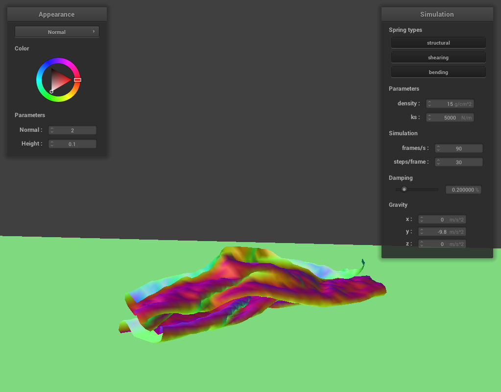
Cloth All On Floor
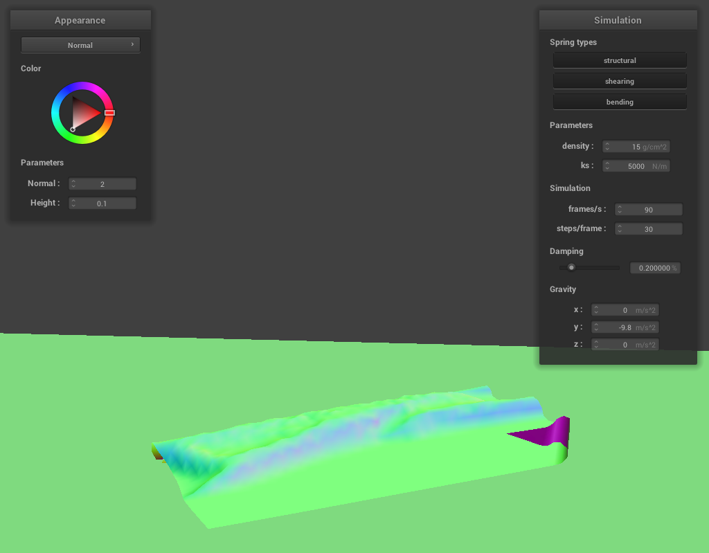
Around Steady-State
Below are images of scene/selfCollision.json at steady-state with the spring constant varied and all other parameters being the default ones. The lower the spring constant, the more the wrinkles in the cloth and the more folds that happen when the cloth is colliding with itself. This makes sense because with a smaller spring constant, the cloth is more free to bend more finely, leading to the cloth colliding such that it has many small wrinkles. On the contrary, with a high spring constant, the cloth does not fold much, and its folds have a more distinctive curve to them. This is also expected, because a higher spring constant prevents the cloth from bending very sharply/creasing, thus giving fewer, but larger folds/bends in our cloth in steady-state. Additionally, the higher spring constant had less rippling/oscillation in steady-state compared to a lower spring constant (which is expected because a high spring constant means that the corrections made by the self collisions are less frequent/large relative to the spring forces).
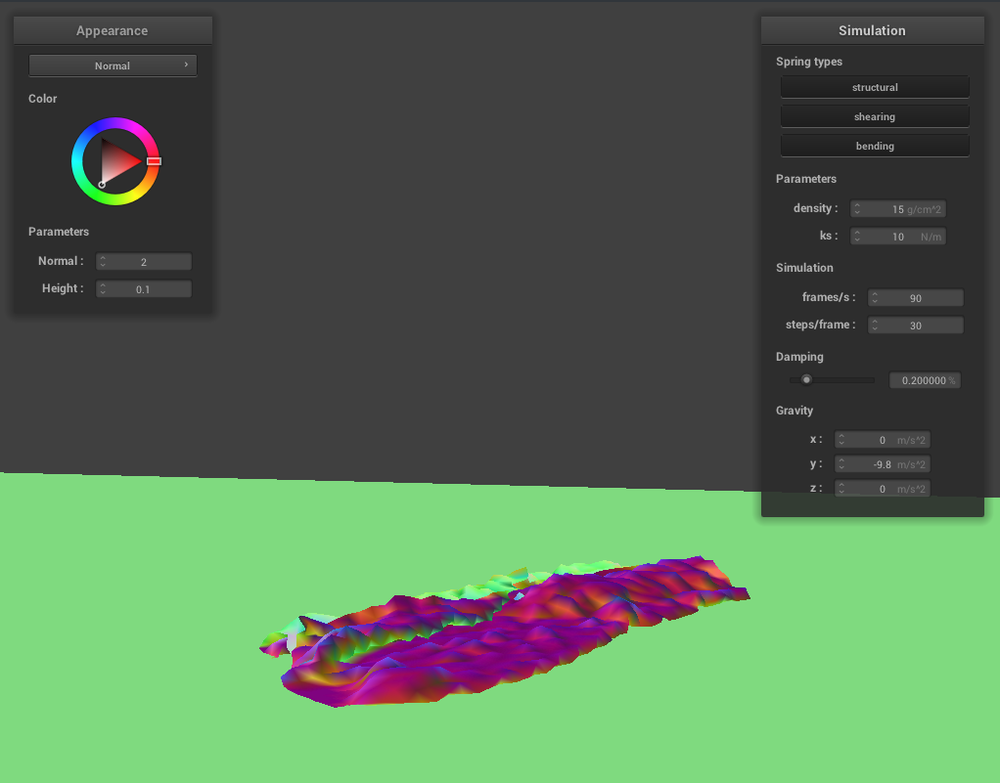
ks=10
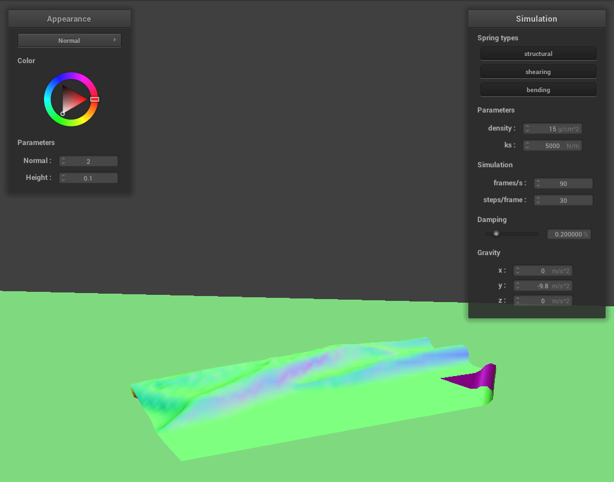
ks=5000 (Default)
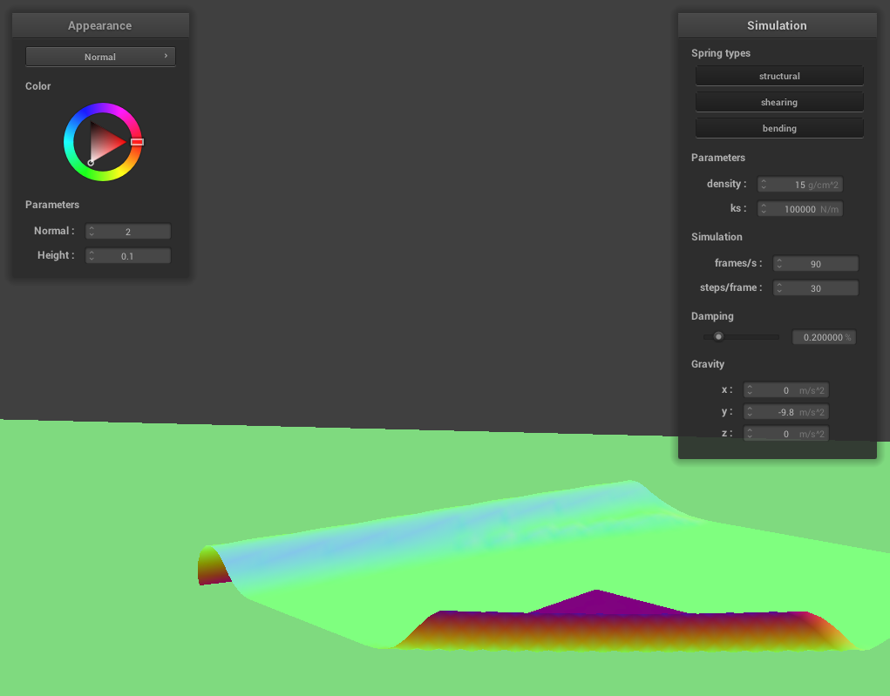
ks=100000
Below are images of scene/selfCollision.json at steady-state with the density varied and all other parameters being the default ones. A lower density results in fewer, but larger folds in the cloth in steady-state. This is expected because we have there being less of a gravitational force relative to the spring and self-collision forces. This leads to the cloth preventing fine creasing and small folds, thus leading to fewer, larger folds. On the contrary, the high density leads to more rippling/oscillation at steady-state and many more smaller folds in the cloth at steady-state. This is also expected, because the spring forces are less significant compared to the gravitational force, and there is more oscillation at steady state. An additional fact to note is that a higher density leads to the cloth falling to its final, crumpled state more quickly, as the spring forces are weaker relative to the gravitational force, thus leading to the cloth colliding with itself more.
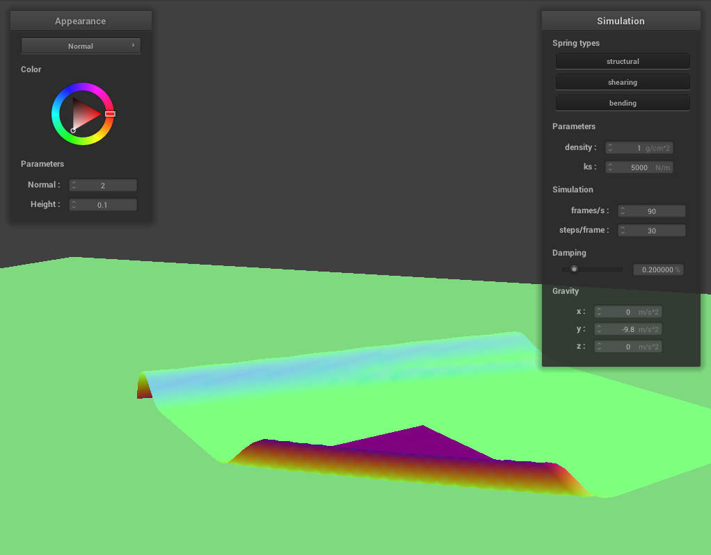
density=1 g/cm^2
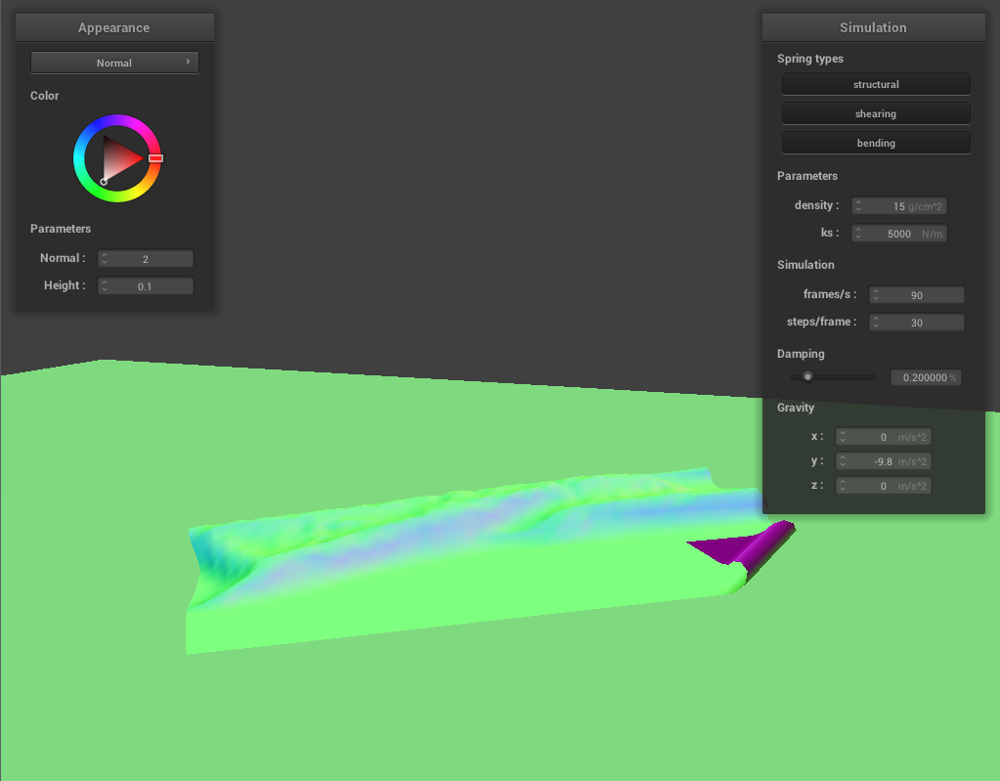
density=15 g/cm^2 (Default)
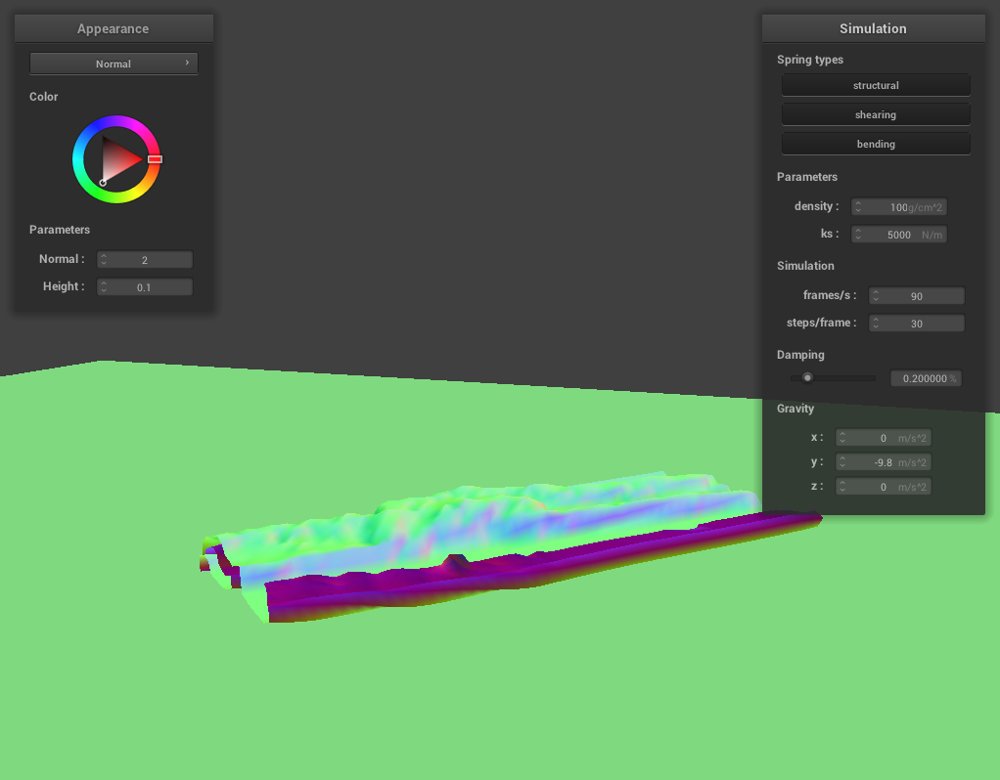
density=100 g/cm^2
Part 5: Shaders
A shader program is a program that calculates the color/lighting at each part of a 3D geometry (potentially based on a texture or sophisticated calculations) during the process of rendering a scene in computer graphics. Shaders can also perform geometric manipulations such as displacing vertices in a 3D mesh geometry. A vertex shader transforms the position of a 3D-positioned vertex to a 2D position on our 2D screen. The vertex shader also passes-in information such as normals and texture coordinates to the next stage in the rasterization pipeline. A fragment shader is a shader program that takes fragments (ex. the potentially-sampled pixels within a specific triangle in our mesh), and it calculates the colors of each fragment. Each fragment can have certain properties associated with it, including the position of the fragment in 3D space and potentially also coordinates for the fragment within an underlying texture. The vertex shader runs at the start of the rasterization process to transform vertex positions to create texturing on our geometric object or perform important transformations. The fragment shader is invoked during the rasterization stage, where we have to calculate the color of each pixel that we are choosing to sample (this is where we perform lighting calculations as well).
The Blinn-Phong model is a simple model to model the combination of three types of lighting:
Ambient Lighting: This is the \(k_aI_a\) term in the Blinn-Phong equation, which represents the "constant" lighting within an environment (i.e. light that is everywhere in the scene without a particular source).
Diffuse Lighting: This is the soft light from a particular light source (which is independent from the viewing angle of the camera), and is represented by the \(k_d\left(\frac{I}{r^2}\right)\cdot\max\left(0,\left\langle\vec{n},\vec{l}\right\rangle\right)\) term.
Specular Lighting: This is the bright light coming from a specific light source that is dependent on the viewing angle of the camera relative to the light source, and it is represented by the \(k_s\left(\frac{I}{r^2}\right)\cdot\max\left(0,\left\langle\vec{n},\vec{h}\right\rangle\right)^p\) term (where \(\vec{h}=\frac{\vec{v}+\vec{l}}{\left\|\vec{v}+\vec{l}\right\|_2}\)).
You directly add-up all three of these terms to get the lighting of an object at position \(\vec{x}\) where \(\vec{v}\) is a vector from \(\vec{x}\) to the camera and \(\vec{l}\) is a vector from \(\vec{x}\) to the light source. Below are some images rendered with Phong shading of scene/sphere.json using my code (where \(k_a=0.1,k_d=0.8,k_l=0.6\)).
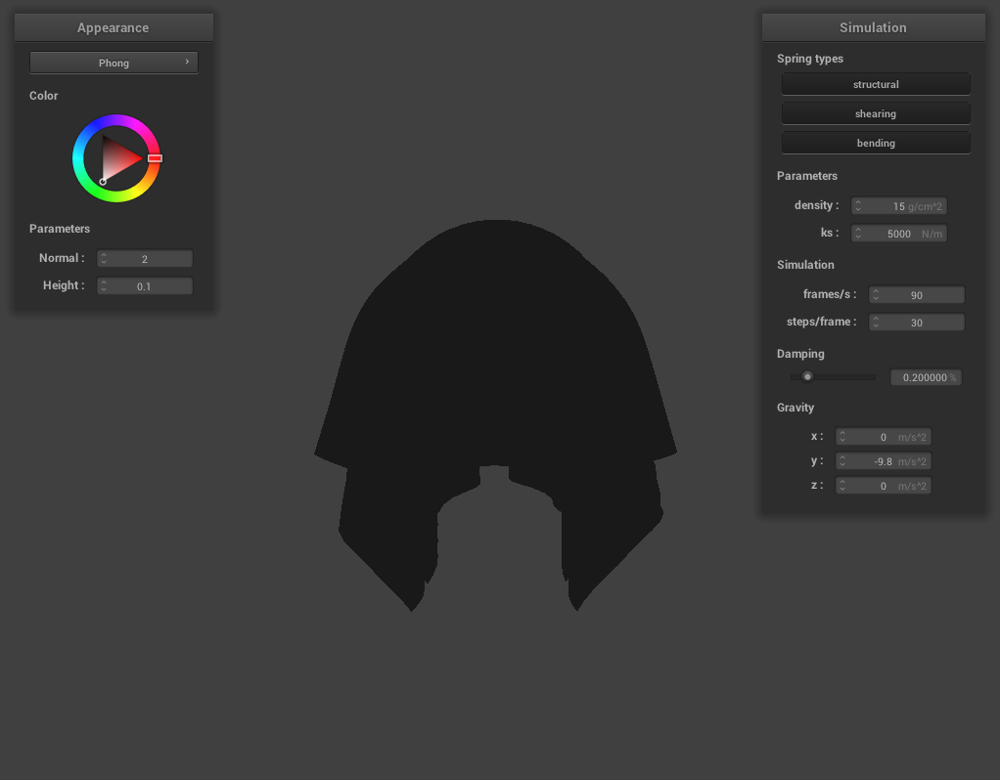
Only Ambient Lighting
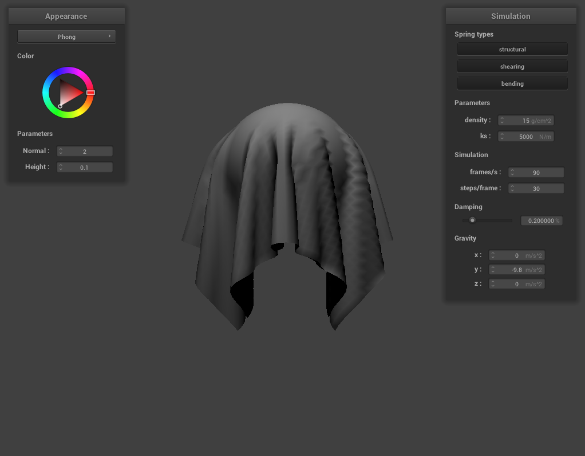
Only Diffuse Lighting
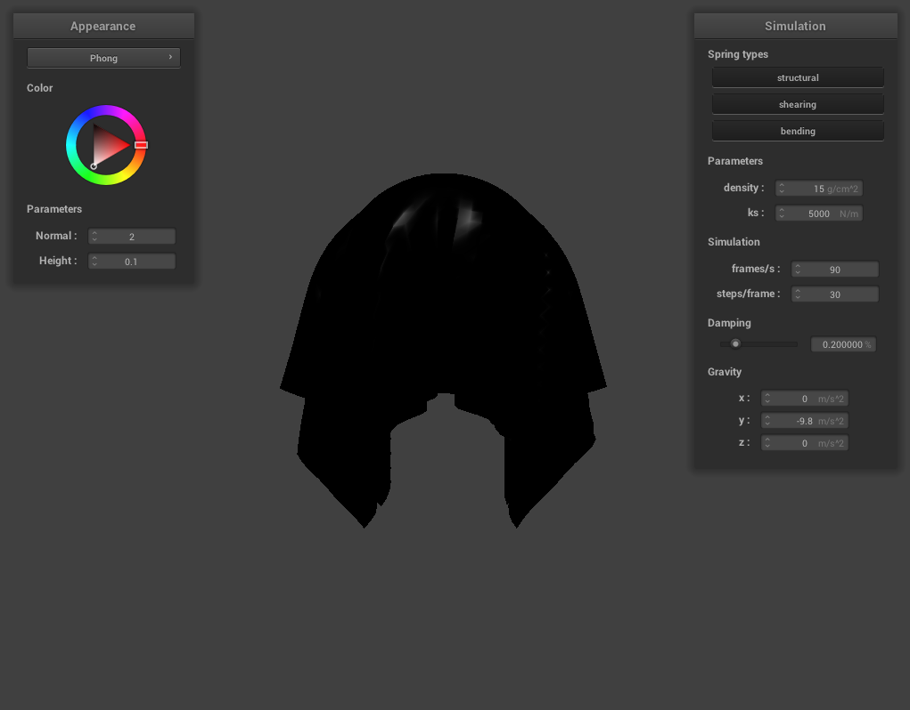
Only Specular Lighting
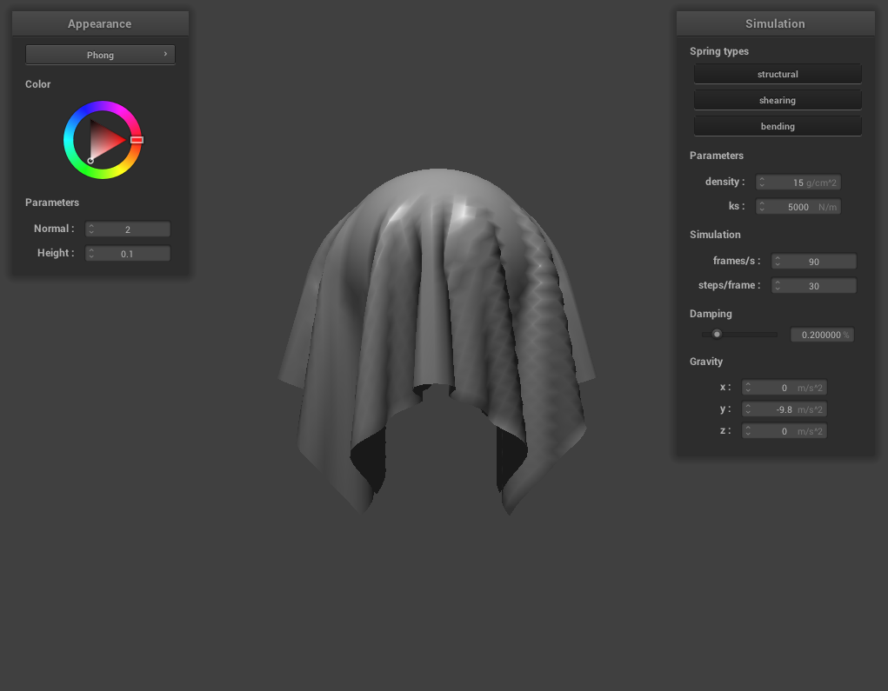
Full Phong Shading
Below is a rendering of scene/sphere.json using my texture-mapping shader on an image I found online (I replaced textures/texture_1.png with this new texture I found).
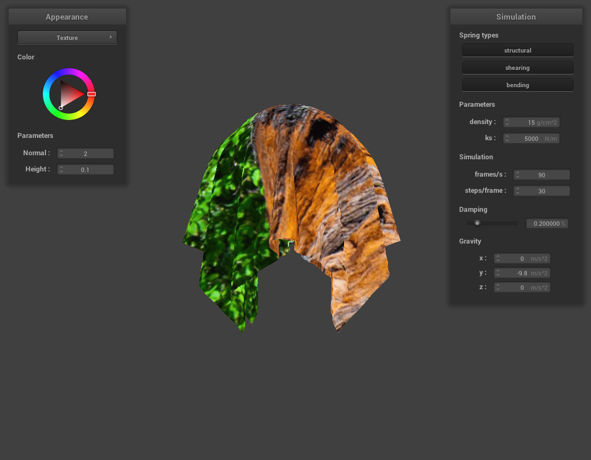
Below are renderings of scene/sphere.json using my bump and displacement mapping shaders on textures/texture_3.png with different mesh coarsenesses (where normal=2 and height=1 for the bump mapping and normal=100 and height=0.02 for displacement mapping). Displacement mapping and bump mapping both use the same fragment shader (they apply the color of the fragment's texture coordinate to be the fragment's color). But, Displacement mapping perturbs the position of each vertex in our mesh by adding the vector \(\vec{n}\cdot h\left(\vec{u},\vec{v}\right)\cdot k_h\) to make the shape of our mesh reflect the variable heights of the texture at different positions. So, this leads to our sphere (particularly the one without a cloth over it), having a rougher physical shape, while the bump mapping doesn't change the fundamental geometry of our mesh, and only gives the illusion of height by performing light calculations with a perturbed position (both displacement and bump mapping use the same fragment shader, but displacement mapping alters the position of vertices in the vertex shader). As for what happens when we change the coarseness of our mesh, we end-up not getting much of a difference in the appearance of the bump mapping (with both only the sphere and with the cloth) other than a few more fine specular lighting details on the model. Similarly, there isn't much of a difference with the cloth draped over the ball on displacement mapping. But, the brick-like texture is much clearer defined on the sphere with displacement mapping at a higher mesh granularity. This is expected, because it allows us to look at more parts of the texture at fine detail to ensure sharp edges are more pronounced in our altered mesh from the vertex shader. But, with a very coarse mesh, we end-up not really getting fine detail, as we don't sample enough/have enough vertices to describe the fine detail in the edges between the bricks.